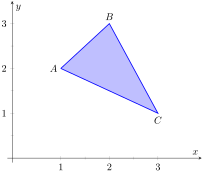

“Orthogonality” is immensely important. A quick scan of your current environment will undoubtedly reveal numerous surfaces and edges that are perpendicular to each other (including the edges of this page). The dot product provides a quick test for orthogonality: vectors \(\vec u\) and \(\vec v\) are perpendicular if, and only if, \(\dotp uv=0\text{.}\)
Given two non-parallel, nonzero vectors \(\vec u\) and \(\vec v\) in space, it is very useful to find a vector \(\vec w\) that is perpendicular to both \(\vec u\) and \(\vec v\text{.}\) There is an operation, called the cross product, that creates such a vector. This section defines the cross product, then explores its properties and applications.
Definition11.4.1.Cross Product.
Let \(\vec u =\la u_1,u_2,u_3\ra\) and \(\vec v = \la v_1,v_2,v_3\ra\) be vectors in \(\mathbb{R}^3\text{.}\) The cross product of \(\vec u\) and \(\vec v\text{,}\) denoted \(\crossp uv\text{,}\) is the vector
This definition can be a bit cumbersome to remember. After an example we will give a convenient method for computing the cross product. For now, careful examination of the products and differences given in the definition should reveal a pattern that is not too difficult to remember. (For instance, in the first component only 2 and 3 appear as subscripts; in the second component, only 1 and 3 appear as subscripts. Further study reveals the order in which they appear.)
Let's practice using this definition by computing a cross product.
Example11.4.2.Computing a cross product.
Let \(\vec u = \la 2,-1,4\ra\) and \(\vec v = \la 3,2,5\ra\text{.}\) Find \(\crossp uv\text{,}\) and verify that it is orthogonal to both \(\vec u\) and \(\vec v\text{.}\)
Since both dot products are zero, \(\crossp uv\) is indeed orthogonal to both \(\vec u\) and \(\vec v\text{.}\)
A convenient method of computing the cross product starts with forming a particular \(3\times 3\)matrix, or rectangular array. The first row comprises the standard unit vectors \(\vec i\text{,}\)\(\vec j\text{,}\) and \(\vec k\text{.}\) The second and third rows are the vectors \(\vec u\) and \(\vec v\text{,}\) respectively. Using \(\vec u\) and \(\vec v\) from Example 11.4.2, we begin with:
This gives three full “upper left to lower right” diagonals, and three full “upper right to lower left” diagonals, as shown. Compute the products along each diagonal, then add the products on the right and subtract the products on the left:
which is the opposite of \(\crossp uv\text{.}\) We leave it to the reader to verify that each of these vectors is orthogonal to \(\vec u\) and \(\vec v\text{.}\)
Subsection11.4.1Properties of the Cross Product
It is not coincidence that \(\crossp vu = -(\crossp uv)\) in the preceding example; one can show using Definition 11.4.1 that this will always be the case. The following theorem states several useful properties of the cross product, each of which can be verified by referring to the definition.
Theorem11.4.4.Properties of the Cross Product.
Let \(\vecu\text{,}\)\(\vecv\) and \(\vecw\) be vectors in \(\mathbb{R}^3\) and let \(c\) be a scalar. The following identities hold:
We introduced the cross product as a way to find a vector orthogonal to two given vectors, but we did not give a proof that the construction given in Definition 11.4.1 satisfies this property. Theorem 11.4.4 asserts this property holds; we leave it as a problem in the Exercise section to verify this.
Property 5 from the theorem is also left to the reader to prove in the Exercise section, but it reveals something more interesting than “the cross product of a vector with itself is \(\vec 0\text{.}\)” Let \(\vec u\) and \(\vec v\) be parallel vectors; that is, let there be a scalar \(c\) such that \(\vecv = c\vecu\text{.}\) Consider their cross product:
We have just shown that the cross product of parallel vectors is \(\vec 0\text{.}\) This hints at something deeper. Theorem 11.3.5 related the angle between two vectors and their dot product; there is a similar relationship relating the cross product of two vectors and the angle between them, given by the following theorem.
Theorem11.4.5.The Cross Product and Angles.
Let \(\vec u\) and \(\vec v\) be nonzero vectors in \(\mathbb{R}^3\text{.}\) Then
\begin{equation*}
\norm{\crossp uv} = \vnorm u\, \vnorm v \sin(\theta)\text{,}
\end{equation*}
where \(\theta\text{,}\)\(0\leq \theta \leq \pi\text{,}\) is the angle between \(\vecu\) and \(\vecv\text{.}\)
Note that this theorem makes a statement about the magnitude of the cross product. When the angle between \(\vecu\) and \(\vecv\) is 0 or \(\pi\) (i.e., the vectors are parallel), the magnitude of the cross product is 0. The only vector with a magnitude of 0 is \(\vec 0\) (see Property 9 of Theorem 11.2.15), hence the cross product of parallel vectors is \(\vec 0\text{.}\)
We demonstrate the truth of this theorem in the following example.
Example11.4.6.The cross product and angles.
Let \(\vec u = \la 1,3,6\ra\) and \(\vec v = \la -1,2,1\ra\) as in Example 11.4.3. Verify Theorem 11.4.5 by finding \(\theta\text{,}\) the angle between \(\vecu\) and \(\vecv\text{,}\) and the magnitude of \(\crossp uv\text{.}\)
Our work in Example 11.4.3 showed that \(\crossp uv = \la -9,-7,5\ra\text{,}\) hence \(\norm{\crossp uv} = \sqrt{155}\text{.}\) Is \(\norm{\crossp uv} = \vnorm u\, \vnorm v\sin(\theta)\text{?}\) Using numerical approximations, we find:
The anticommutative property of the cross product demonstrates that \(\crossp uv\) and \(\crossp vu\) differ only by a sign — these vectors have the same magnitude but point in the opposite direction. When seeking a vector perpendicular to \(\vec u\) and \(\vec v\text{,}\) we essentially have two directions to choose from, one in the direction of \(\crossp uv\) and one in the direction of \(\crossp vu\text{.}\) Does it matter which we choose? How can we tell which one we will get without graphing, etc.?
Another wonderful property of the cross product, as defined, is that it follows the right hand rule. Given \(\vec u\) and \(\vec v\) in \(\mathbb{R}^3\) with the same initial point, point the index finger of your right hand in the direction of \(\vecu\) and let your middle finger point in the direction of \(\vecv\) (much as we did when establishing the right hand rule for the 3-dimensional coordinate system). Your thumb will naturally extend in the direction of \(\crossp uv\text{.}\) One can “practice” this using Figure 11.4.7. If you switch, and point the index finder in the direction of \(\vecv\) and the middle finger in the direction of \(\vecu\text{,}\) your thumb will now point in the opposite direction, allowing you to “visualize” the anticommutative property of the cross product.
Figure11.4.7.Illustrating the Right Hand Rule of the cross product
Subsection11.4.2Applications of the Cross Product
There are a number of ways in which the cross product is useful in mathematics, physics and other areas of science beyond “just” finding a vector perpendicular to two others. We highlight a few here.
Area of a Parallelogram.
It is a standard geometry fact that the area of a parallelogram is \(A = bh\text{,}\) where \(b\) is the length of the base and \(h\) is the height of the parallelogram, as illustrated in Figure 11.4.8.(a). As shown when defining the Parallelogram Law of vector addition, two vectors \(\vecu\) and \(\vecv\) define a parallelogram when drawn from the same initial point, as illustrated in Figure 11.4.8.(b). Trigonometry tells us that \(h = \vnorm u \sin(\theta)\text{,}\) hence the area of the parallelogram is
\begin{equation}
A = \vnorm u\,\vnorm v\sin(\theta) = \norm{\crossp uv}\text{,}\tag{11.4.1}
\end{equation}
Figure11.4.8.Using the cross product to find the area of a parallelogram
We illustrate using Equation (11.4.1) in the following example.
Example11.4.9.Finding the area of a parallelogram.
Find the area of the parallelogram defined by the vectors \(\vecu = \la 2,1\ra\) and \(\vecv = \la 1,3\ra\text{.}\)
Verify that the points \(A = (1,1,1)\text{,}\)\(B = (2,3,2)\text{,}\)\(C = (4,5,3)\) and \(D = (3,3,2)\) are the vertices of a parallelogram. Find the area of the parallelogram.
Figure 11.4.10.(a) sketches the parallelogram defined by the vectors \(\vec u\) and \(\vec v\text{.}\) We have a slight problem in that our vectors exist in \(\mathbb{R}^2\text{,}\) not \(\mathbb{R}^3\text{,}\) and the cross product is only defined on vectors in \(\mathbb{R}^3\text{.}\) We skirt this issue by viewing \(\vec u\) and \(\vecv\) as vectors in the \(x-y\) plane of \(\mathbb{R}^3\text{,}\) and rewrite them as \(\vec u = \la 2,1,0\ra\) and \(\vecv =\la 1,3,0\ra\text{.}\) We can now compute the cross product. It is easy to show that \(\crossp uv = \la 0,0,5\ra\text{;}\) therefore the area of the parallelogram is \(A = \norm{\crossp uv} = 5\text{.}\)
Figure11.4.10.Sketching the parallelograms in Example 11.4.9
To show that the quadrilateral \(ABCD\) is a parallelogram (shown in Figure 11.4.10.(b)), we need to show that the opposite sides are parallel. We can quickly show that \(\overrightarrow{AB} =\overrightarrow{DC} = \la 1,2,1\ra\) and \(\overrightarrow{BC} = \overrightarrow{AD} = \la 2,2,1\ra\text{.}\) We find the area by computing the magnitude of the cross product of \(\overrightarrow{AB}\) and \(\overrightarrow{BC}\text{:}\)
This application is perhaps more useful in finding the area of a triangle (in short, triangles are used more often than parallelograms). We illustrate this in the following example.
Example11.4.11.Area of a triangle.
Find the area of the triangle with vertices \(A=(1,2)\text{,}\)\(B=(2,3)\) and \(C=(3,1)\text{,}\) as pictured in Figure 11.4.12.

Figure11.4.12.Finding the area of a triangle in Example 11.4.11
We found the area of this triangle in Example 7.1.10 to be \(1.5\) using integration. There we discussed the fact that finding the area of a triangle can be inconvenient using the “\(\frac12bh\)” formula as one has to compute the height, which generally involves finding angles, etc. Using a cross product is much more direct.
We can choose any two sides of the triangle to use to form vectors; we choose \(\overrightarrow{AB} = \la 1,1\ra\) and \(\overrightarrow{AC}=\la 2,-1\ra\text{.}\) As in the previous example, we will rewrite these vectors with a third component of 0 so that we can apply the cross product. The area of the triangle is
We arrive at the same answer as before with less work.
Volume of a Parallelepiped.
The three dimensional analogue to the parallelogram is the parallelepiped. Each face is parallel to the opposite face, as illustrated in Figure 11.4.13. By crossing \(\vec v\) and \(\vec w\text{,}\) one gets a vector whose magnitude is the area of the base. Dotting this vector with \(\vecu\) computes the volume of parallelepiped! (Up to a sign; take the absolute value.)
Figure11.4.13.A parallelepiped is the three dimensional analogue to the parallelogram
Thus the volume of a parallelepiped defined by vectors \(\vecu\text{,}\)\(\vecv\) and \(\vec w\) is
\begin{equation}
V = \abs{\vecu\cdot (\crossp vw)}\text{.}\tag{11.4.2}
\end{equation}
Note how this is the Triple Scalar Product, first seen in Theorem 11.4.4. Applying the identities given in the theorem shows that we can apply the Triple Scalar Product in any “order” we choose to find the volume. That is,
\begin{equation*}
V = \abs{\vecu\cdot(\crossp vw)} = \abs{\vec u\cdot (\crossp wv)} = \abs{(\crossp uv)\cdot \vecw}, \text{ etc. }
\end{equation*}
Example11.4.14.Finding the volume of parallelepiped.
Find the volume of the parallelepiped defined by the vectors \(\vecu = \la 1,1,0\ra\text{,}\)\(\vecv = \la -1,1,0\ra\) and \(\vecw = \la 0,1,1\ra\text{.}\)
While this application of the Triple Scalar Product is interesting, it is not used all that often: parallelepipeds are not a common shape in physics and engineering. The last application of the cross product is very applicable in engineering.
Torque.
Torque is a measure of the turning force applied to an object. A classic scenario involving torque is the application of a wrench to a bolt. When a force is applied to the wrench, the bolt turns. When we represent the force and wrench with vectors \(\vec F\) and \(\vec \ell\text{,}\) we see that the bolt moves (because of the threads) in a direction orthogonal to \(\vec F\) and \(\vec \ell\text{.}\) Torque is usually represented by the Greek letter \(\tau\text{,}\) or tau, and has units of N\(\cdot\)m, a Newton–meter, or ft\(\cdot\)lb, a foot–pound.
While a full understanding of torque is beyond the purposes of this book, when a force \(\vec F\) is applied to a lever arm \(\vec \ell\text{,}\) the resulting torque is
A lever of length 2ft makes an angle with the horizontal of \(45^\circ\text{.}\) Find the resulting torque when a force of 10lb is applied to the end of the level where:
Figure11.4.17.Showing a force being applied to a lever in Example 11.4.16
the force is perpendicular to the lever, and
the force makes an angle of \(60^\circ\) with the lever, as shown in Figure 11.4.17.
We start by determining vectors for the force and lever arm. Since the lever arm makes a \(45^\circ\) angle with the horizontal and is 2ft long, we can state that \(\vec \ell = 2\la \cos(45^\circ) ,\sin(45^\circ) \ra = \la \sqrt2,\sqrt2\ra\text{.}\) Since the force vector is perpendicular to the lever arm (as seen in the left hand side of Figure 11.4.17), we can conclude it is making an angle of \(-45^\circ\) with the horizontal. As it has a magnitude of 10lb, we can state \(\vec F = 10\la \cos(-45^\circ), \sin(-45^\circ)\ra = \la 5\sqrt2,-5\sqrt2\ra\text{.}\) Using Equation (11.4.3) to find the torque requires a cross product. We again let the third component of each vector be 0 and compute the cross product:
This clearly has a magnitude of 20 ft-lb. We can view the force and lever arm vectors as lying “on the page”; our computation of \(\vec\tau\) shows that the torque goes “into the page.” This follows the Right Hand Rule of the cross product, and it also matches well with the example of the wrench turning the bolt. Turning a bolt clockwise moves it in.
Our lever arm can still be represented by \(\vec \ell = \la \sqrt2,\sqrt2\ra\text{.}\) As our force vector makes a \(60^\circ\) angle with \(\vec \ell\text{,}\) we can see (referencing the right hand side of the figure) that \(\vec F\) makes a \(-15^\circ\) angle with the horizontal. Thus
As one might expect, when the force and lever arm vectors are orthogonal, the magnitude of force is greater than when the vectors are not orthogonal.
While the cross product has a variety of applications (as noted in this chapter), its fundamental use is finding a vector perpendicular to two others. Knowing a vector is orthogonal to two others is of incredible importance, as it allows us to find the equations of lines and planes in a variety of contexts. The importance of the cross product, in some sense, relies on the importance of lines and planes, which see widespread use throughout engineering, physics and mathematics. We study lines and planes in the next two sections.
Exercises11.4.3Exercises
Terms and Concepts
1.
The cross product of two vectors is a , not a scalar.
2.
One can visualize the direction of \(\vec u\times\vec v\) using the
.
3.
Give a synonym for “orthogonal.”
4.
True or False? A fundamental principle of the cross product is that \(\vec u\times\vec v\) is orthogonal to \(\vec u\) and \(\vec v\text{.}\)
True
False
5.
is a measure of the turning force applied to an object.
6.
T/F: If \(\vec u\) and \(\vec v\) are parallel, then \(\vec u\times\vec v=\vec 0\text{.}\)
Problems
Exercise Group.
In the following exercises, vectors \(\vec u\) and \(\vec v\) are given. Compute \(\vec u\times\vec v\) and check this is orthogonal to both \(\vec u\) and \(\vec v\text{.}\)
7.
Let \(\vec u = \la 3,2,-2\ra\text{,}\)\(\vec v = \la 0,1,5\ra\text{.}\)
\(\vec u\times\vec v=\)
Check this is orthogonal to both \(\vec u\) and \(\vec v\text{.}\)
8.
Let \(\vec u = \la 5, -4, 3\ra\text{,}\)\(\vec v = \la 2, -5, 1\ra\text{.}\)
\(\vec u\times\vec v=\)
Check this is orthogonal to both \(\vec u\) and \(\vec v\text{.}\)
9.
Let \(\vec u = \la 4, -5, -5\ra\text{,}\)\(\vec v = \la 3, 3, 4\ra\text{.}\)
\(\vec u\times\vec v=\)
Check this is orthogonal to both \(\vec u\) and \(\vec v\text{.}\)
10.
Let \(\vec u = \la -4, 7, -10\ra\text{,}\)\(\vec v = \la 4, 4, 1\ra\text{.}\)
\(\vec u\times\vec v=\)
Check this is orthogonal to both \(\vec u\) and \(\vec v\text{.}\)
11.
Let \(\vec u = \la 1, 0, 1\ra\text{,}\)\(\vec v = \la 5, 0, 7\ra\text{.}\)
\(\vec u\times\vec v=\)
Check this is orthogonal to both \(\vec u\) and \(\vec v\text{.}\)
12.
Let \(\vec u = \la 1, 5, -4\ra\text{,}\)\(\vec v = \la -2, -10, 8\ra\text{.}\)
\(\vec u\times\vec v=\)
Check this is orthogonal to both \(\vec u\) and \(\vec v\text{.}\)
13.
\(\vec u = \langle a,b,0\rangle\text{,}\)\(\vec v = \langle c,d,0\rangle\)
14.
Let \(\vec u = \hat\imath\text{,}\)\(\vec v = \hat\jmath\text{.}\)
\(\vec u\times\vec v=\)
Check this is orthogonal to both \(\vec u\) and \(\vec v\text{.}\)
15.
Let \(\vec u = \hat\imath\text{,}\)\(\vec v = \hat{k}\text{.}\)
\(\vec u\times\vec v=\)
Check this is orthogonal to both \(\vec u\) and \(\vec v\text{.}\)
16.
Let \(\vec u = \hat\jmath\text{,}\)\(\vec v = \hat{k}\text{.}\)
\(\vec u\times\vec v=\)
Check this is orthogonal to both \(\vec u\) and \(\vec v\text{.}\)
17.
Pick any vectors \(\vec u\text{,}\)\(\vec v\) and \(\vec w\) in \(\mathbb{R}^3\) and show that \(\vec u \times (\vec v+\vec w) = \vec u\times \vec v+\vec u\times \vec w\text{.}\)
18.
Pick any vectors \(\vec u\text{,}\)\(\vec v\) and \(\vec w\) in \(\mathbb{R}^3\) and show that \(\vec u \cdot (\vec v\times\vec w) = (\vec u\times \vec v)\cdot \vec w\text{.}\)
Exercise Group.
In the following exercises, the magnitudes of vectors \(\vec u\) and \(\vec v\) in \(\mathbb{R}^3\) are given, along with the angle \(\theta\) between them. Use this information to find the magnitude of \(\vec u\times\vec v\text{.}\)
19.
If \(\vnorm{u} = 2\text{,}\)\(\vnorm{v} = 5\text{,}\) and \(\theta = 30^{\circ}\) is the angle between \(\vec u\) and \(\vec v\text{,}\) then \(\norm{\vec u\times\vec v}=\)
20.
If \(\vnorm{u} = 3\text{,}\)\(\vnorm{v} = 7\text{,}\) and \(\theta = \pi/2\) is the angle between \(\vec u\) and \(\vec v\text{,}\) then \(\norm{\vec u\times\vec v}=\)
21.
If \(\vnorm{u} = 3\text{,}\)\(\vnorm{v} = 4\text{,}\) and \(\theta = \pi\) is the angle between \(\vec u\) and \(\vec v\text{,}\) then \(\norm{\vec u\times\vec v}=\)
22.
If \(\vnorm{u} = 2\text{,}\)\(\vnorm{v} = 5\text{,}\) and \(\theta = 5\pi/6\) is the angle between \(\vec u\) and \(\vec v\text{,}\) then \(\norm{\vec u\times\vec v}=\)
Exercise Group.
In the following exercises, find the area of the parallelogram defined by the given vectors.
23.
Find the area of the parallelogram defined by \(\vec u = \la 1,1,2\ra\text{,}\) and \(\vec v = \la 2,0,3\ra\text{.}\)
24.
Find the area of the parallelogram defined by \(\vec u = \la -2,1,5\ra\text{,}\) and \(\vec v = \la -1,3,1\ra\text{.}\)
25.
Find the area of the parallelogram defined by \(\vec u = \la 1,2\ra\text{,}\) and \(\vec v = \la 2,1\ra\text{.}\)
26.
Find the area of the parallelogram defined by \(\vec u = \la 2,0\ra\text{,}\) and \(\vec v = \la 0,3\ra\text{.}\)
Exercise Group.
In the following exercises, find the area of the triangle with the given vertices.
27.
Find the area of the triangle with vertices \((0,0,0)\text{,}\)\((1,3,-1)\) and \((2,1,1)\text{.}\)
28.
Find the area of the triangle with vertices \((5,2,-1)\text{,}\)\((3,6,2)\) and \((1,0,4)\text{.}\)
29.
Find the area of the triangle with vertices \((1,1)\text{,}\)\((1,3)\) and \((2,2)\text{.}\)
30.
Find the area of the triangle with vertices \((3,1)\text{,}\)\((1,2)\) and \((4,3)\text{.}\)
Exercise Group.
In the following exercises, find the area of the quadrilateral with the given vertices. (Hint: break the quadrilateral into two triangles.)
31.
Find the area of the quadrilateral with vertices \((0,0)\text{,}\)\((1,2)\text{,}\)\((3,0)\text{,}\) and \((4,3)\text{.}\)
32.
Find the area of the quadrilateral with vertices \((0,0,0)\text{,}\)\((2,1,1)\text{,}\)\((-1,2,-8)\text{,}\) and \((1,-1,5)\text{.}\)
Exercise Group.
In the following exercises, find the volume of the parallelepiped defined by the given vectors.
33.
Find the volume of the parallelepiped defined by \(\vec u = \la 1,1,1\ra\text{,}\)\(\vec v=\la 1,2,3\ra\text{,}\) and \(\vec w = \la 1,0,1\ra\text{.}\)
34.
Find the volume of the parallelepiped defined by \(\vec u = \la -1,2,1\ra\text{,}\)\(\vec v=\la 2,2,1\ra\text{,}\) and \(\vec w = \la 3,1,3\ra\text{.}\)
Exercise Group.
In the following exercises, find a unit vector orthogonal to both \(\vec u\) and \(\vec v\text{.}\)
35.
Find a unit vector orthogonal to both \(\vec u = \la 1,1,1\ra\text{,}\) and \(\vec v=\la 2,0,1\ra\text{.}\)
36.
Find a unit vector orthogonal to both \(\vec u = \la 1,-2,1\ra\text{,}\) and \(\vec v=\la 3,2,1\ra\text{.}\)
37.
Find a unit vector orthogonal to both \(\vec u = \la 5,0,2\ra\text{,}\) and \(\vec v=\la -3,0,7\ra\text{.}\)
38.
Find a unit vector orthogonal to both \(\vec u = \la 1,-2,1\ra\text{,}\) and \(\vec v=\la -2,4,-2\ra\text{.}\)
39.
A bicycle rider applies 150lb of force, straight down, onto a pedal that extends 7in horizontally from the crankshaft. Find the magnitude of the torque applied to the crankshaft.
40.
A bicycle rider applies 150lb of force, straight down, onto a pedal that extends 7in from the crankshaft, making a \(30^\circ\) angle with the horizontal. Find the magnitude of the torque applied to the crankshaft.
41.
To turn a stubborn bolt, 80lb of force is applied to a 10in wrench. What is the maximum amount of torque that can be applied to the bolt?
42.
To turn a stubborn bolt, 80lb of force is applied to a 10in wrench in a confined space, where the direction of applied force makes a \(10^\circ\) angle with the wrench. How much torque is subsequently applied to the wrench?
43.
Show, using the definition of the Cross Product, that \(\vec u\cdot(\vec u\times\vec v)=0\text{;}\) that is, that \(\vec u\) is orthogonal to the cross product of \(\vec u\) and \(\vec v\text{.}\)
44.
Show, using the definition of the Cross Product, that \(\vec u\times\vec u=\vec 0\text{.}\)